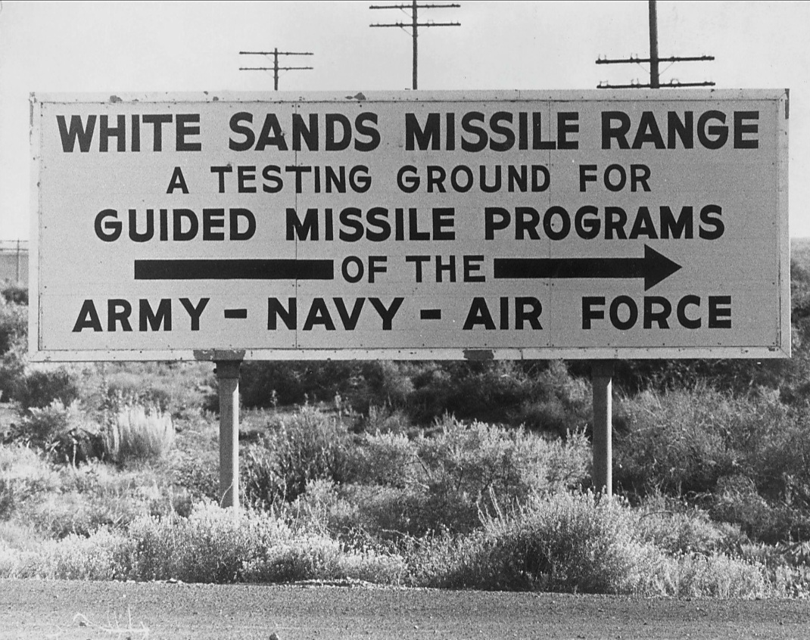
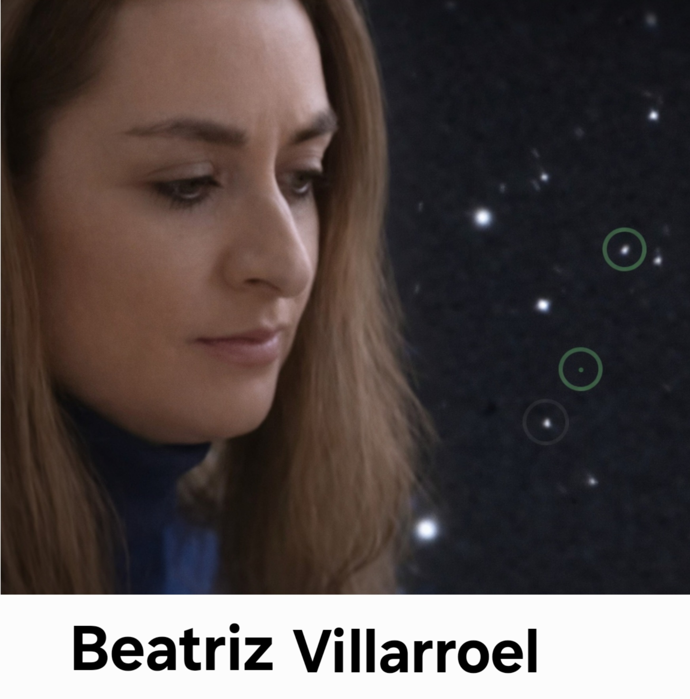

Kärnvapenepoken: data, berättelser och historisk markör
Hur samma teknologiska genombrott gav upphov till moraliska berättelser, empiriska mönster och kosmisk reflektion – utan att dessa språk får blandas samman.
Denna sida rör sig mellan historia, berättelser och modern forskning. Delarna är avsiktligt åtskilda.
Inledning
Denna sida behandlar kärnvapenepoken som ett historiskt skede där flera olika sätt att beskriva och förstå svårförklarade fenomen uppstår parallellt.
Särskilt uppmärksammas två uttryck som ofta sammanblandas, men som här hålls isär: mänskliga närkontaktsredogörelser och observationsbaserad forskning.
Närkontaktsredogörelser behandlas här som historiskt och kulturellt material, eftersom de i dagsläget inte kan prövas eller verifieras med vedertagna vetenskapliga metoder.
Observationsbaserad forskning behandlas separat och utgår från arkivmaterial, mätdata och metodisk analys, där fokus ligger på dokumentation, reproducerbarhet och tydlig nivåseparation.
Sidans grundprincip är att dessa nivåer inte sammanblandas. De använder olika språk, tjänar olika syften och kräver olika analysramar.
Sidan gör inga påståenden om tolkning av fenomenen i sig.
Dess syfte är att tydliggöra sammanhang och visa hur samma historiska epok kan rymma olika uttryck utan att reduceras till en gemensam förklaring.
När samma epok bär olika språk
Kärnvapen återkommer i mänskliga närkontaktsredogörelser som ett återkommande tema – inte som teknisk beskrivning, utan som symbol för risk, ansvar och möjlig självförstörelse i en tid präglad av ny teknologisk kapacitet.
I detta register fungerar kärnteknologin som ett narrativt element i berättelser om upplevda händelser.
Samtidigt förekommer kärnteknologin i ett annat register i empiriskt material, där den används som tidsmässig markör i analyser av arkivdata.
I sådana analyser kan vissa anomalier beskrivas som sammanfallande med perioder av intensiv kärn- och raketteknologisk aktivitet.
Att dessa två uttryck uppträder parallellt innebär inte att de delar mening eller orsak, utan att de uppstår inom samma historiska tidsrum.
Under epokens tidiga år koncentrerades denna utveckling till ett begränsat antal geografiska områden där testmiljöer, mätning och övervakning byggdes ut.
Det är mot denna bakgrund som vissa platser från perioden kan förstås som knutpunkter där tekniska tester, empiriska observationer och samtida mänskliga erfarenheter samexisterade, utan att sammanfalla i betydelse.
Följande avsnitt använder White Sands Missile Range som en sådan historisk testmiljö och referenspunkt.
White Sands Missile Range



Denna händelse används i forskning som en tydlig historisk markör för inledningen av kärnteknologisk aktivitet och förekommer i analyser där tidsmässiga samband mellan teknologiska epoker och observationsdata undersöks.
Under kärnvapenepokens tidiga år sammanföll flera avgörande förändringar i samma geografiska och tidsmässiga rum. Militära testmiljöer etablerades för att utveckla och pröva ny teknologi, samtidigt som system för mätning, övervakning och registrering togs i bruk.
Vid White Sands genomfördes de första testerna av kärnvapenteknologi. Den 16 juli 1945 detonerades den första atombomben, vilket markerade ett teknologiskt och historiskt brott: för första gången kunde människan frigöra energi i en skala som omedelbart påverkade omgivning, materia och livsbetingelser.
Testerna följdes av omfattande mätningar av tryckvågor, strålning, atmosfäriska effekter och tekniska avvikelser – data som senare kom att användas som referens i analyser av både teknologi och miljöpåverkan.
Samtidigt levde människor i och omkring dessa miljöer med insikten om att något fundamentalt hade förändrats. I detta sammanhang tog också andra former av beskrivningar form: berättelser, vittnesmål och redogörelser som inte utgick från mätinstrument, utan från upplevelse och tolkning.
Samtida tester fick långvariga konsekvenser även för civilbefolkningen i området, vilket senare dokumentation tydligt visar. Se exempelvis: Aftonbladet – ”Vi behandlades som råttor”
Mot denna bakgrund träder en närkontakt fram.
Närkontaktsredogörelsernas språk
Här behandlas språket från närkontaktsredogörelser om upplevda händelser som historiskt material, eftersom de i dagsläget inte kan behandlas som data. Detta beror på att det ännu saknas vedertagna metoder för att verifiera eller statistiskt pröva de upplevelser som beskrivs.
I många närkontaktsredogörelser beskrivs hur individer upplever att de får se bilder eller sekvenser av framtida förstörelse – ofta kopplade till kärnvapen, radioaktiv ödeläggelse eller en obeboelig jord. Dessa syner fungerar inte som observationer i vetenskaplig mening, utan som ett återkommande narrativt mönster där kärnteknologin blir bärare av mänsklig oro, skuld och ansvar.
Dessa erfarenheter har inte uppstått i ett tomrum. De har formulerats i en historisk kontext präglad av djupa teknologiska skiften, där individers möten med nya och svårbegripliga fenomen utan vedertagen förklaring sammanföll med en samtid präglad av existentiell osäkerhet. För att förstå deras roll behöver de därför läsas både i relation till sin tid och utifrån hur de upplevdes av dem som berördes.
På individnivå beskrivs dessa upplevelser dock inte som tolkningar eller efterhandsreflektioner. I närkontaktsredogörelser beskrivs de bilder och intryck som förmedlas inte som egna konstruktioner, utan som spontana upplevelser som, enligt de berörda, mottogs i samband med mötet med fenomenet. Flera vittnesmål betonar att upplevelserna var oväntade, oönskade och inte föregångna av något intresse eller engagemang i frågorna. De som beskriver dem uppger sig inte ha sökt rollen, utan att de oförberett drogs in i ett förmedlande sammanhang – i flera fall ofrivilligt i en roll som bärare av innehåll riktat bortom den egna personen, snarare än som ett uttryck för egen tolkning eller bearbetning.
Mot denna bakgrund kan enskilda närkontaktsredogörelser förstås som uttryck för sin tid. Daniel W. Frys utsagor används här inte som personliga vittnesmål, utan som ett illustrativt exempel på hur sådana redogörelser tog form i direkt anslutning till kärnvapen- och raketteknologiska testmiljöer, särskilt kring White Sands under 1950-talet. I sina redogörelser beskrev Fry att han upplevde kontakt med ett icke-mänskligt fenomen, vilket enligt honom själv förmedlade bilder och information rörande mänsklig teknik, dess konsekvenser och framtida risker. Dessa upplevelser återgavs som mottagna snarare än egenkonstruerade och presenterades av Fry som faktiska erfarenheter, inte som symboliska tolkningar eller metaforer.
Metodnot: Frågor om förändringar, tillägg eller möjliga motsägelser i Daniel W. Frys senare redogörelser behandlas inte här. Sådana bedömningar kräver andra analysramar än de som används på denna sida.
Nedanstående bildmaterial fungerar som tids- och miljöreferens för denna period.


”Faran för ert släktes totala undergång genom förstörelsemedel, som det själv framskapat, är nu ständigt överhängande. Hur kan då ett folk vara hotat av sina egna verk? Orsaken är helt enkelt den, att människorna inte gjort tillräckligt stora framsteg på det andliga och sociala området för att kunna avgöra, hur den materiella produktionen bäst skall kunna utnyttjas.”
”De flesta av ert släkte som verkligen tänker, är klart medvetna om den fara, som ligger i bruket av kärnvapen. Men man inser vanligen inte, att problemet också har en annan sida. Faktum är emellertid, att såvida inte enighet mellan era nationer uppnås, kommer slutligen själva det förhållandet, att sådana vapen finns – även om de aldrig kommer till användning – att medföra den nuvarande civilisationens totala sammanbrott.”
Exempel på mottaget budskapsinnehåll enligt Daniel W. Frys redogörelser (historiskt källmaterial, ej verifierbart underlag): gratisenergi.se/alanbud.htm
Carl Sagan: kosmisk reflektion och ansvar

Carl Sagan representerar ett tredje sätt att tala som växer fram under kärnvapenepoken: ett reflekterande, kosmiskt perspektiv som står bredvid både närkontaktsredogörelsernas moraliska symbolik och den observationsbaserade forskningens dataregister.
Som astronom och planetforskare rörde han sig analytiskt och disciplinerat mellan empirisk kunskap – planetmiljöer, sannolikheter och riskbedömningar – och de större frågor som följer av teknologiska språng: hur en civilisation hanterar makt, sårbarhet och tidsskala. Sagan var samtidigt en tidig och central röst inom SETI-forskning och resonemang om teknosignaturer, och visade att det är möjligt att diskutera teknologiska spår och kosmiska sammanhang utan att sammanblanda hypotes, symbolik och bevis.
I detta sammanhang fungerar Sagan som en historisk markör för ett medvetet separerat språk. Vetenskapliga data behandlas strikt som data, medan följderna av teknologisk kapacitet – kärnvapenhot, ekologisk risk och civilisatorisk mognad – förs i ett eget filosofiskt och etiskt register. Han söker inte svar i berättelser, och han låter mätningar förbli mätningar.
Sagan blir därmed en brofigur mellan vetenskaplig stringens och civilisatorisk självkännedom: ett sätt att hålla tanken stor utan att göra metoden mjuk. Samtidigt vägrar han föreställningen att fakta kan existera utan konsekvenser för hur en civilisation förstår och förvaltar sin egen makt.
De citat som följer används här inte som utsmyckning, utan som orienteringspunkter. De sammanfattar Sagans grundhållning: teknologisk kapacitet måste förstås tillsammans med ansvar, och mognad prövas när samhällen kan hota sina egna livsvillkor.
Självrisk
For the first time in the history of the planet, a species has the technology to destroy itself. This is a test of our maturity.
— Carl SaganEskalationslogik
The nuclear arms race is like two sworn enemies standing waist deep in gasoline, one with three matches, the other with five.
— Carl SaganKosmisk perspektivförskjutning
We are the representatives of the cosmos; we are an example of what hydrogen atoms can do, given billions of years of cosmic evolution.
— Carl Sagan

För en samtida översikt av Voyager-sonderna och deras betydelse, se Yle.
Stafettpinnen: från reflektion till metod
Med Voyager-sonderna blir Sagans perspektiv konkret: teknik som existerar oberoende av mänsklig närvaro och fortsätter att bära information långt bortom sin ursprungliga kontext.
Här sker ett tydligt skifte – från vad tekniken säger om oss, till hur teknologiska spår över huvud taget kan identifieras, särskiljas och undersökas i data. Fokus flyttas från civilisatorisk självreflektion till metod, mätbarhet och reproducerbarhet.
Det är i detta skifte som dagens observationsbaserade forskning tar vid. I stället för berättelser eller symbolik riktas blicken mot kortlivade ljusfenomen, arkivmaterial och mönster som ännu saknar etablerad förklaring.
Frågan är inte hur en civilisation tolkar sig själv, utan hur spår av avancerad teknologi kan observeras, verifieras och följas upp utan att metodisk disciplin löses upp.
Beatriz Villarroel

Beatriz Villarroels arbete kan förstås som ett nästa steg i den linje som Carl Sagan etablerade. Där Sagan formulerade behovet av kosmisk öppenhet utan att tumma på vetenskaplig disciplin, för Villarroel detta förhållningssätt in i ett konsekvent observationsbaserat forskningsfält.
Där Sagan visade att reflektion och vetenskaplig disciplin kan samexistera utan att sammanblandas, tar Villarroel detta förhållningssätt in i ett konsekvent observationsarbete. Fokus ligger på hur data samlas in, jämförs, verifieras och bevaras över tid.
Hennes forskning utgår från en grundläggande men långtgående insikt: historiska observationsarkiv innehåller fortfarande information som ännu inte är fullt analyserad eller förstådd. Genom systematiska jämförelser mellan äldre fotografiska plåtar och moderna datakataloger undersöker hon anomalier – ljusstarka objekt som oväntat försvinner eller tillfälligt framträder utan tillfredsställande förklaring i befintliga kataloger. Dessa avvikelser behandlas som vetenskapliga anomalier, det vill säga observerbara mönster i materialet som ännu saknar fullständig förklaring.
Ett centralt exempel är VASCO-projektet (Vanishing & Appearing Sources during a Century of Observations), där forskare och volontärer internationellt granskar historiska data med moderna analysmetoder. Under hösten 2025 erkändes två av Villarroels forskningsrapporter av Vetenskapsrådet, vilket markerar att arbetet bedöms hålla vetenskaplig relevans och kvalitet inom etablerade forskningsramar.

Parallellt utvecklas instrumentella initiativ som ExoProbe – specialutvecklade teleskop placerade i New Mexico. Området sammanfaller geografiskt med flera historiska miljöer där förhållandena varit särskilt gynnsamma för observation, mätning och teknikutveckling, och där långvarig infrastruktur för astronomiska studier redan finns. I denna miljö bedrivs nu ett modernt observationsarbete med fokus på triangulering, oberoende verifiering och reproducerbarhet.

Villarroels kommunikation visar en ovanlig disciplin: hon kan formulera personliga reflektioner öppet, samtidigt som hon håller analysen strikt förankrad i observationsdata, metod och reproducerbarhet. I intervjuer har hon beskrivit hur arbetet med observationsdata bidragit till hennes egen reflektion kring frågan om intelligens i kosmos, och uttryckt det personligt som:
“Jag tror inte att vi någonsin har varit ensamma.”
Den 20 mars 2024 medverkade Villarroel vid Europaparlamentets UAP-möte, där observationsdata behandlades i relation till flygsäkerhet, rapportering och forskningsinfrastruktur på europeisk nivå. Där betonades behovet av öppna databaser, standardiserade rapporteringsformat och långsiktigt hållbara system för oberoende granskning – exakt de strukturer som hennes arbete bygger upp i praktiken.
Genom att konsekvent hålla fast vid metod, transparens och reproducerbarhet, och genom att aktivt uppmuntra andra forskare att arbeta på samma sätt, för Villarroel linjen vidare in i ett modernt observationsfält. Här kan även komplexa och tidigare marginaliserade frågor undersökas med vetenskaplig integritet, utan att metod eller disciplin kompromissas.